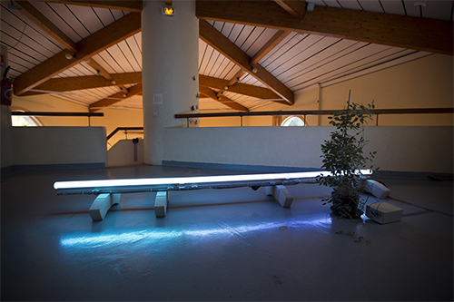
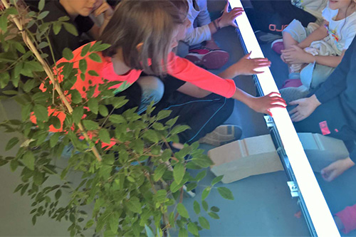

Variation pour montée de sève, néons à LED (3m), électroniques et données relatives à la vitesse de montée de sève. Installation réalisée avec le soutien du CDA, Centre des Arts d’Enghien-les-Bains – Ecritures numériques - exposition L'Art se fait Nature, Les Vendémiaires, LAAB 2018.
L'ART SE FAIT NATURE
Variation pour montée de sève, est une installation lumineuse dans laquelle est rendu visible sur des néons, la progression en temps réel, de la sève ascendante le long du tronc ou le la tige principal d’une plante. Nous sommes ainsi baignés dans un espace où les changements de luminosités provoqués par la sève sont relatifs au rythme biologique de la plante.
"Cette 32° édition propose une exposition sur l’Art et la Nature, avec six artistes aux langages artistiques différents.
Que les Arts visuels s’intéressent à la nature n’est évidemment pas nouveau. Tout le monde connait l’art du paysage ou celui des natures mortes dans lesquels la nature est représentée. Mais au-delà, sont apparus divers mouvements, comme le « Land Art » anglosaxon ou l’ « Arte Povera » italien, qui intègrent la nature, non pas simplement en la représentant de façon figée, mais en faisant de cette nature la matière même de l’œuvre, en intégrant par exemple le temps comme une nouvelle dimension.
Une exposition qui se veut étonnante et interroge sur la nature qui se fait elle-même œuvre d’art, et plus largement, si vous nous pardonnez le jeu de mots, sur la nature de l’Art."

Vue de l'installation, Variation pour montée de sève, néons à LED (3m), électroniques et données relatives à la vitesse de montée de sève. Installation réalisée avec le soutien du CDA, Centre des Arts d’Enghien-les-Bains – Ecritures numériques - exposition L'Art se fait Nature, Les Vendémiaires, LAAB 2018.

Détail, Variation pour montée de sève, néons à LED, électroniques et données relatives à la vitesse de montée de sève. Installation réalisée avec le soutien du CDA, Centre des Arts d’Enghien-les-Bains – Ecritures numériques - exposition L'Art se fait Nature, Les Vendémiaires, LAAB 2018.